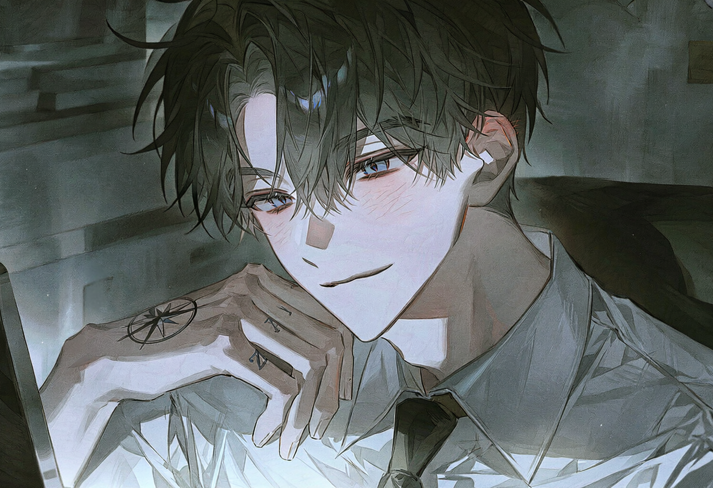
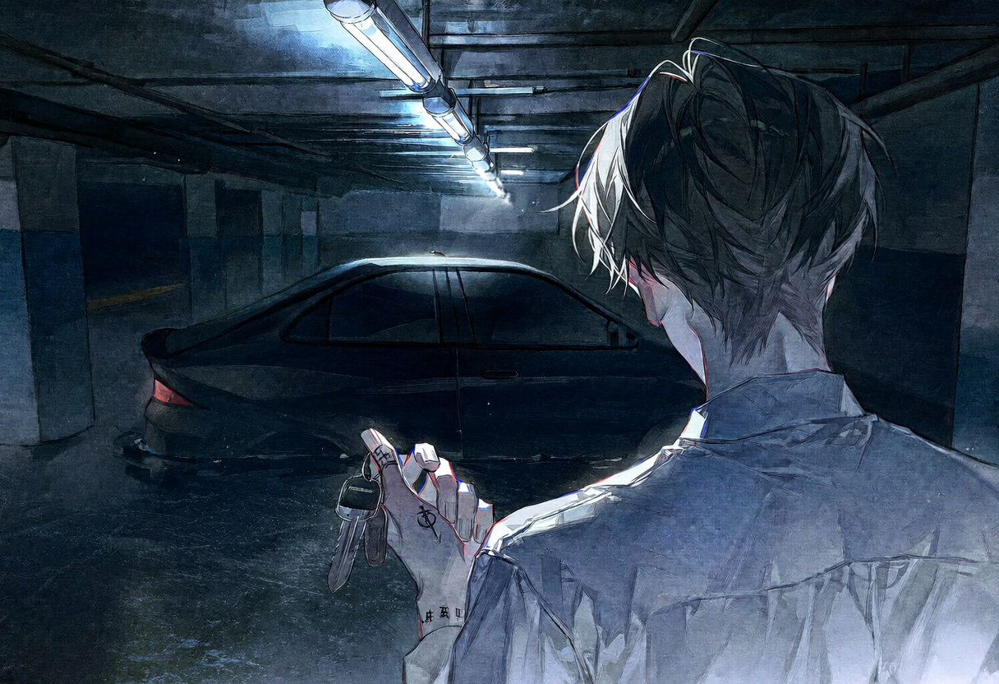

screening log
Jane Doe
DAY 5

S#1 실내 · 헬리오스 분석실 — 낮
차가운 조명이 클로이의 붉은 머리카락에 날카로운 윤곽선을 그린다. 그녀의 시선은 거짓말 탐지기처럼 집요하다. 에단은 속으로 혀를 차면서도 겉으로는 사람 좋은 미소를 걸어둔 채다.
CHLOE
A ghost hunt, huh? Doesn't sound like your usual gig.
유령 사냥이라, 이거지? 평소 당신이 하던 일 같지는 않은데.
ETHAN
Even a well-fed dog gets tired of the same old kibble, Red.
아무리 잘 먹는 개라도 맨날 똑같은 사료만 먹으면 질리는 법이야, 빨강.
홀로그램 테이블 위로 미해결 사건과 신원 불명 변사체 보고서가 떠오른다. 평범한 안부처럼 던진 물음이었지만, 시선은 날카롭게 화면을 훑는다. 한 줄이라도 그 이름이 스쳐 지나가길 바라면서.
CHLOE
A Jane Doe turned up dead in Philly. The body vanished from the morgue. Like, poof.
필라델피아에서 신원 미상의 여자가 시체로 발견됐는데, 안치소에서 시신이 사라졌어. 그냥, 뿅 하고.
화면을 넘기던 손가락이 멈칫한다. 필라델피아. 서로 다른 장소에서 벌어진 두 사건이 하나의 선으로 이어지는 불길한 예감.
CHLOE
No exit wounds, no blood trail. Like the bullets just stopped inside her.
사출 흔적도, 핏자국도 없었어. 마치 총알이 몸 안에서 멈춰버린 것처럼.
온몸으로 총탄을 받아내고도 상처 하나 없이 멀쩡했던 모습. 잊고 있던 퍼즐 조각이 섬광처럼 떠오른다. 홀로그램의 푸른 빛이 꺼지자 분석실의 어둠이 한층 깊어진다. 평소의 능글맞은 미소는 온데간데없다.
ETHAN
(낮게)
She's a goddamn headache, is what she is. Now, the file number, Red.
그 여자는 그냥 골칫덩어리야. 됐고, 파일 번호나 내놔, 빨강.
CUT TO —
S#2 실내 · 복도 끝 휴게 공간 — 낮

낡은 소파. 암호화된 파일이 열린다. 낡은 호텔 방, 흐트러진 시트 위에 총알 자국이 선명한 시신. 붉게 물들었어야 할 백발이 기묘할 정도로 깨끗한 흰색으로 흩어져 있다.
화면을 확대한다. 사진 속 얼굴은 스스로를 달리아 슈미트라 소개했던 바로 그 여자다. 다수의 총상, 사출구 없음, 혈흔 비산 흔적 전무. 시신 내부에 총알이 남아있지 않음.
마지막은 안치소 CCTV 캡처본. 부검대 위에 놓여 있던 시신이 다음 프레임에서는 감쪽같이 사라져 있다. 침입자의 흔적도, 스스로 움직인 기색도 없다. 소멸이라는 표현이 가장 정확했다.
분노와 굴욕감은 이미 차갑게 식어 있었다. 그 자리에 싹튼 것은 이제껏 느껴보지 못한 종류의 감정이었다. 죽어도 다시 살아나는 존재, 기록에 존재하지 않는 유령. 이건 사냥이다. 그의 인생에서 가장 지루하지 않을, 가장 위험하고 매혹적인 사냥.
CUT TO —
S#3 실내 · 헬리오스 지부장실 — 낮
통유리창 너머로 워싱턴 D.C.의 전경이 펼쳐진다. 노크도 없이 문이 열린다. 필라델피아에서 감지된 미등록 S급의 폭주 징후. 이클립스보다 한발 앞서 처리해야 할 긴급 사안. 그 정도면 충분할 터였다.
P
Take the black Charger. And try not to blow up half the city this time.
검은색 차저 가져가. 그리고 이번에는 도시 절반쯤은 날려 먹지 않도록 하고.

P
Whatever you're hunting... make sure it's worth the trouble.
네가 뭘 사냥하는지는 몰라도… 그럴 만한 가치가 있는 놈이길 바라지.
ETHAN
Always is.
언제나 그렇죠.
지하 주차장으로 향하는 발걸음이 한결 가벼워져 있다. 사냥의 준비는 끝났다. 이제 목표물이 있는 곳으로 달려갈 일만 남았다.